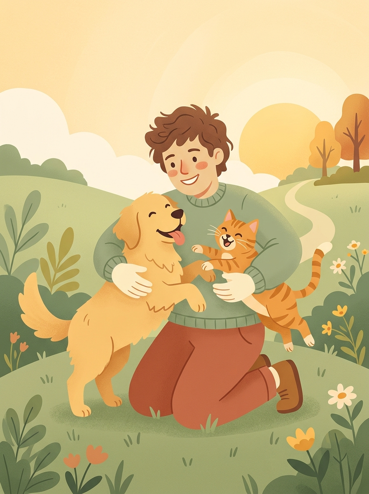

ไทม์ไลน์เบาะแสที่ติดตามรวมประกาศที่กดเก็บไว้ตรวจสอบ หรือเบาะแสที่มีคนแจ้งเข้ามา
ค้นหาด้วยภาพ · เทียบประกาศอัตโนมัติ
ตามหาสัตว์เลี้ยงหาย
ตามหาสัตว์เลี้ยงหาย
เริ่มต้นง่ายๆ แค่ส่งรูปน้อง
เพียงอัปโหลดรูปสัตว์เลี้ยง ระบบจะวิเคราะห์ลักษณะเด่นและค้นหาประกาศที่ใกล้เคียงจากเครือข่ายแจ้งหาย–พบให้อัตโนมัติ
♡ใช้งานฟรี · ไม่ต้องสมัครสมาชิก · ระบบช่วยวิเคราะห์และบันทึกให้อัตโนมัติ

วันนี้กำลังตามหาใคร?
ประกาศสัตว์หายและพบสัตว์
กดที่การ์ดเพื่อดูรายละเอียด แจ้งเบาะแส หรือเทียบภาพหาประกาศที่ใกล้เคียง
ทะเบียนสัตว์เลี้ยงของฉันเก็บรูปน้องหลายมุมไว้ล่วงหน้า หากหายกดสร้างประกาศได้ในคลิกเดียว
ยังไม่มีโปรไฟล์สัตว์เลี้ยง
แนะนำให้เก็บรูปหน้าตรงและด้านข้างของน้องไว้ล่วงหน้า
แนะนำให้เก็บรูปหน้าตรงและด้านข้างของน้องไว้ล่วงหน้า
กำลังตรวจแหล่งประกาศ…
📊 สไลด์นำเสนอโปรเจกต์ (24 หน้า · เจาะลึก AI, แหล่งประกาศ และ SQLite) →
🤖 ห้องตรวจจับ AI 5 ชนิด & โซน 5 มุม →
เครื่องมือจัดการข้อมูลและตัวกรองขั้นสูง
● หมายเหตุ คะแนนความคล้ายจากระบบช่วยคัดกรองภาพเบื้องต้น กรุณาตรวจสอบจุดสังเกตและพื้นที่จริงก่อนติดต่อ